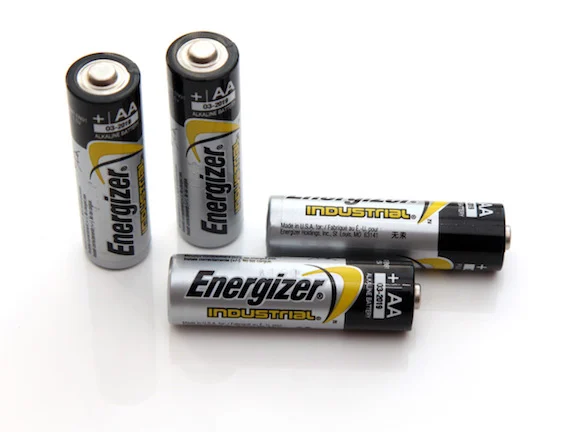

How To Prevent Fire
| By the mandate of Presidential Proclamation No. 115-A, s.1966, March is observed as the Fire Prevention Month to remind the public the importance of Fire Safety. According to PAGASA, March is considered to be one of the warmest months in the Philippines, temperature and humidity reach their maximum levels throughout the archipelago. It marks the beginning of the summer season in the Philippines. It is also the month that has one of the most alarming fire incidents in the country, based on data by the Bureau of Fire Protection (BFP). |
 |
Install smoke alarms on every level of your home, inside bedrooms and outside sleeping areas. |
|  |
Test smoke alarms every month. If they’re not working, change the batteries. |
|
Talk with all family members about a fire escape plan and practice the plan twice a year. |
|
If a fire occurs in your home, GET OUT, STAY OUT and CALL FOR HELP. Never go back inside for anything or anyone. |